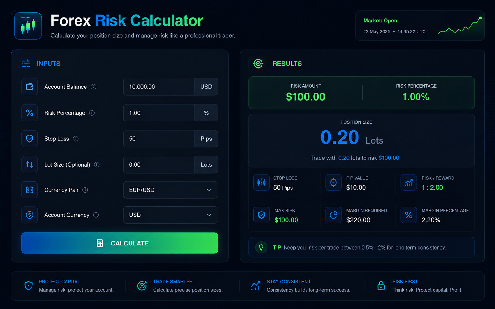
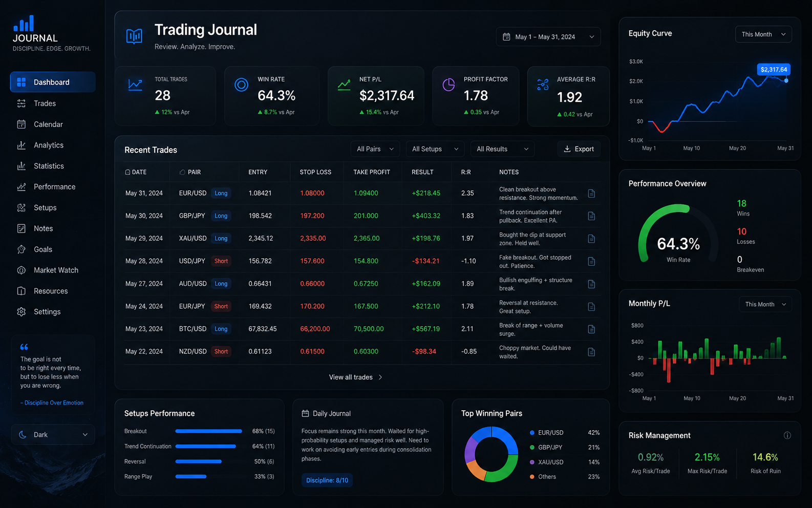
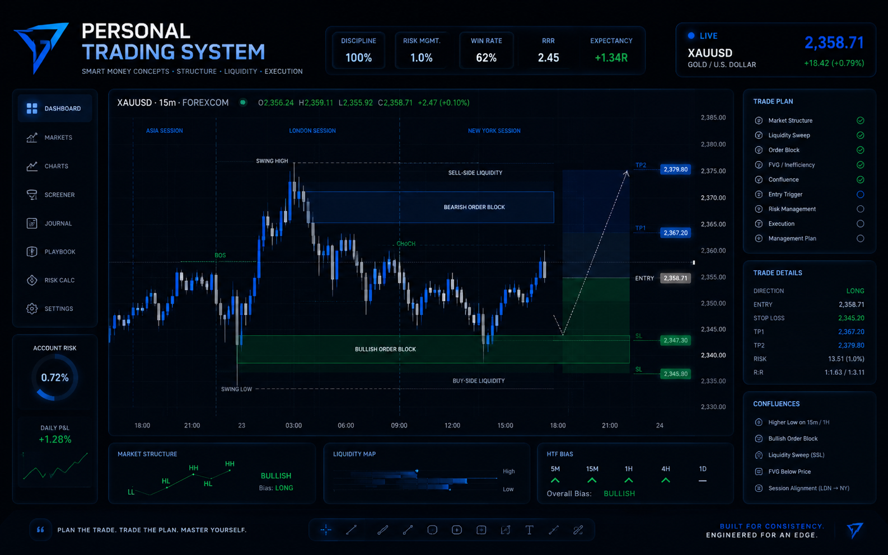
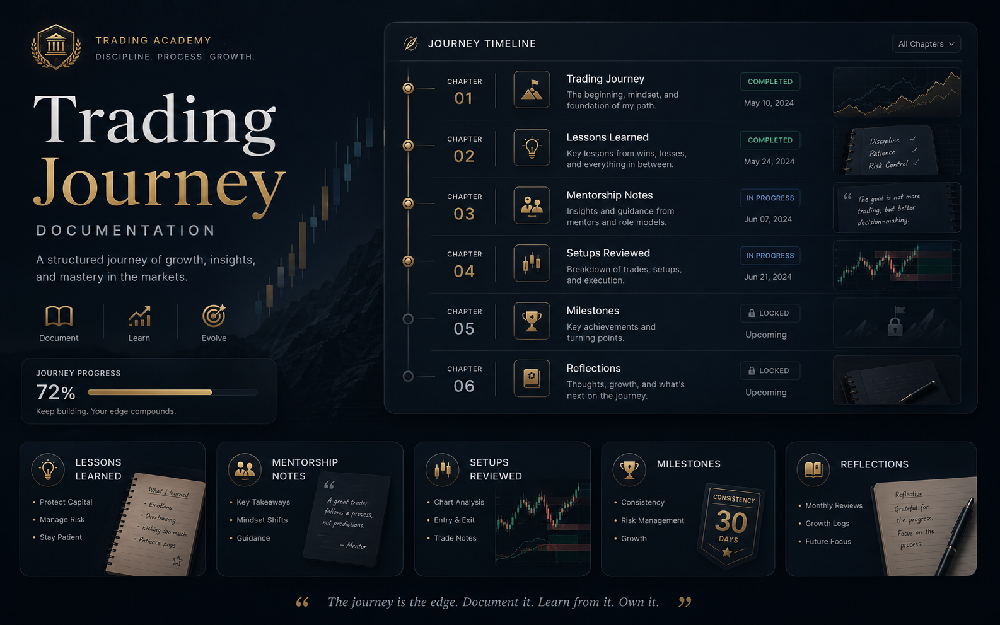
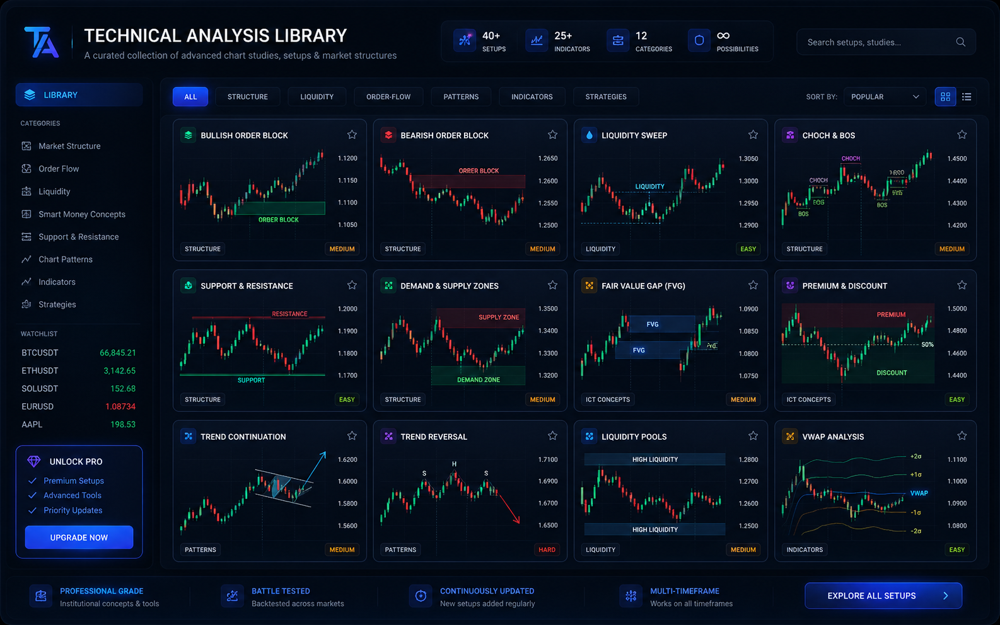

01
UI
Web Development
Semantic HTML, modern CSS, responsive design, JavaScript, Tailwind, and Vue for fast, accessible interfaces.
I build clean, responsive websites and analyze financial markets using the same analytical mindset. For me, coding and trading are both about solving complex problems through structure, discipline, and continuous learning.
I've developed a balanced skillset that bridges technology and finance. Each skill informs the other, creating a unique perspective on problem-solving.
Semantic HTML, modern CSS, responsive design, JavaScript, Tailwind, and Vue for fast, accessible interfaces.
Technical analysis, price action, fundamental analysis, psychology, and risk management before reward.
Workflow concepts that connect content, client intake, data capture, and repeatable business operations.
This responsive portfolio website showcasing my skills as both a frontend developer and forex trader.

A web tool for traders to calculate position sizes based on account balance and risk percentage.

HTML/CSS template for recording and analyzing trades systematically.

Developed and refined a systematic trading approach combining SMC and Supply/Demand concepts.

Complete record of my forex learning journey from discovery to current approach.

Personal collection of chart patterns, setups, and backtested strategies.
Forex Education Blog: Sharing trading concepts in simple terms
Real-time Economic Calendar: Integrated with trading hours
Trading Community Platform: For strategy discussion and analysis
Automated Trade Journal: With performance analytics
First step every day: check economic calendar for news and avoid trading during high-impact events.
4-hour chart for market bias, 1-hour zones, and lower timeframes for precise entry execution.
Risk only 1% of capital per trade, aim for 1:5 reward-to-risk, and take partials at 1:3.
Trading Principles: Fundamental Analysis, Technical Analysis, Risk Management (1-2% per trade), Discipline & Psychology.
Step 1: Fundamental Check. First step every day: check economic calendar for news. Avoid trading during high-impact news events such as NFP, CPI, and central bank decisions. Understand market sentiment and potential volatility shifts, then only proceed when fundamentals align with the technical setup.
Step 2: Timeframe Analysis. 4-hour chart for overall market bias and direction. 1-hour chart to identify key supply and demand zones. Lower timeframes, usually 5-15 minutes, for precise entry execution.
Step 3: Entry Strategy. Wait for price to sweep liquidity before tapping into key zones: supply and demand zones, order blocks and breakers, support and resistance levels, and areas where institutional traders are likely to act.
Step 4: Risk Management. Risk only 1% of capital per trade. Aim for a 1:5 reward-to-risk ratio. Take partial profits at 1:3 and never move stop loss to break-even too early.
Key Focus Areas: Smart Money Concepts, order blocks, liquidity sweeps, Change of Character, and volatility analysis.
Psychology & Discipline: No revenge trading after a loss, record every trade with screenshots, review past trades weekly, wait for confirmation before entry, avoid early exits, and always check fundamentals before analyzing charts.
Preferences: Forex pairs USDJPY, GBPJPY, EURUSD; commodities such as Gold (XAUUSD); and crypto such as Bitcoin (BTCUSD).
My Trading Philosophy: "Fundamentals first, then technicals. Trade what you see, not what you hope. Let price action tell the story with news context, manage risk before reward, and be patient enough to wait for high-probability setups only."
I'm a web developer with a passion for creating intuitive, user-focused web experiences. My journey into forex trading began as a curiosity about global markets and evolved into a disciplined practice of technical analysis and risk management.
I discovered that both fields require patience, pattern recognition, and systematic thinking whether debugging code or analyzing price charts. My dual expertise allows me to approach problems from unique angles.
To bridge technology and finance by creating clean web experiences while applying systematic analysis to financial markets, proving disciplined thinking works in both code and charts.
Understand the user, market, news context, and technical setup.
Create clean systems, zones, layouts, and reusable decisions.
Build the interface or take the trade only when confirmation is clear.
Journal results, backtest ideas, and improve the edge weekly.
During my last semester of Senior High School (SHS), I began focusing on cryptocurrency and electronic coins, specifically on how people make money from them. During that time, I learned about Peer-to-Peer (P2P) trading, where people buy USDT using physical money through methods like Mobile Money (MoMo), cards, and bank transfers.
Inspired by XM AHMED and SEFEERA, I started with crypto trading and joined a free Telegram group where analysis was shared at no cost. As I continued, I learned that the financial market is not limited to cryptocurrency. You can also trade stocks, currencies, and many other instruments.
In January 2023, I joined the FOREX BULLS ACADEMY, run by Daniel, a Kenyan trader, for a fee of $120. We learned support and resistance, demand and supply, Smart Money Concepts, and ICT. Among these, my favorite is using Demand and Supply combined with SMC.
During that same January, I also paid for mentorship with a Ghanaian trader named COFFIEX FX. It deepened my knowledge of higher timeframes and their role in making sound long-term decisions.
My personal stance on forex is that it is not a get-rich-quick scheme. Psychology, risk management, patience, and structured process matter more than prediction. A gambler hopes to get lucky. A trader aims to be consistently proficient.
Email: Message Me
WhatsApp: Click To Message Mehopefx21